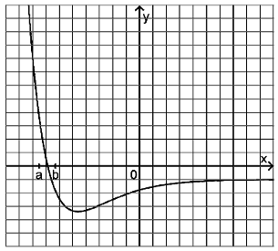

Graphing the antiderivative¶
Problem
The figure depicts the graph of a function \(f\).
Describe the shape of the graph of an antiderivative of \(f\) for \(a\leq x\leq b\).
Sketch in the figure the graph of an antiderivative of \(f\) in the full range represented.
Solution of part a
We first sketch the antiderivative of the form
For \(x=a\), the antiderivative thus vanishes. For \(x>a\), the antiderivative starts to grow initially more strongly, then more weakly until the zero \(x=x_0\) of \(f\) is reached. Then, the antiderivative decreases, first slowly and then more strongly until \(x=b\) is reached.
In order to treat this problem with the help of Sage, we first need to find a function which resembles the one displayed in the figure. This is more or less the case for the so called Lennard-Jones potential, a function which in physics describes the binding energy between certain atoms. A possible form of the function is
where \(a\) and \(b\) are constants. In order to obtain a form close to the one given in this problem, we shift and compress the function accordingly. For the use with Sage, we employ the function
To obtain the shape of the antiderivative in the range surrounding the zero of the function, we determine the definite integral of the function from \(a\) to \(x\) where \(x\) runs from \(a = -1.8\) to \(b = -1.4\).
Solution of part b
In this part of the problem we consider an antiderivative which vanishes at the point where the representation of the function in the figure begins, i.e., we consider the function
with \(c\) being the left-most point where the function is depicted. Like in the first part of the problem, our antiderivative is growing initially rather strongly. The growth then slows down and, at the zero of \(f\), changes its sign. Then, the antiderivative decreases strictly monotonic and beyond a certain point remains negative. The strongest decrease of the antiderivative is found at the minimum of the function \(f\). Afterwards, the antiderivative decreases more slowly and approaches a straight line with a negative slope when reaching the end of the range represented.
We proceed with Sage like in the previous part of the problem, simply adjusting the antiderivative and the range where it is represented.